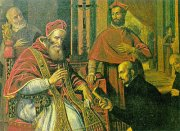

Obsah
Světové baroko
České baroko
+ Komedie dell’arte
Římská fontána di Trevi od Nicoly Salviho
|
BAROKO
Od 16. stol. se prosazuje nový sloh, který postupně vystřídal renesanci a manýrismus. Baroko je svázáno především s katolickými zeměmi a určovalo podobu umění až do 18. století. Jeho název by se dal přeložit jako nepravidelná perla (portugalsky barocco). Barokní tvorba je charakteristická niternou zbožností, dramatičností, expresivitou a důrazem na vnější efekt.
V 18. století vyústilo baroko v rokoko. Pro tento styl je naopak typická hravost a lehkost. Název rokoko vznikl z francouzského výrazu pro mušličku (rocaille).
V 16. stol. se ustavily první protestantské církve (luteráni, kalvinisté, anglikáni, novokřtěnci...) Augšpurský náboženský mír (1555) umožnil německým knížatům svobodnou volbu vyznání. Poddaní se museli rozhodnutí svého pána podřídit podle zásady „čí země, toho víra". Obyvatelé Falce díky tomu museli v krátké době šestkrát změnit konfesi…
Katolická církev reagovala na rozmáhající se odpadlictví protireformací a cílenou rekatolizací.
Nové rozdělení Evropy vyústilo v třicetiletou válku.
|
Historie
Třicetiletá válka (1618-1648) byla konfliktem mocenským i náboženským. Střetly se v ní dva velké tábory – Protestantská unie (1608) a Katolická liga (1609). Válka zdecimovala evropskou populaci. Vestfálský mír (1648) potvrdil nové uspořádání v Evropě z roku 1624, která se definitivně rozdělila na dvě oblasti – katolickou a protestantskou.
|
Inkvizice
Víš, co je autodafé?
|
Inkvizice
Inkvizice vznikla už v roce 1215 jako nástroj k potírání kacířství. Jejím vedením byl pověřen nový řád dominikánů. S kacíři se konaly neveřejné soudní procesy (vyšetřování, soudní řízení i vynesení rozsudku bylo v jedněch rukou a bez možnosti obhajoby), přiznání se vynucovalo mučením a obvyklým trestem bylo upálení za živa. V roce 1542 získala tato církevní instituce název Sacrum Officium a stala se nástrojem násilné rekatolizace. Zběsilý hon na čarodějnice odstartovalo vydání Kladiva na čarodějnice (1487), které sepsali dominikáni Institoris a Sprenger. Majetek odsouzených propadl tomu, kdo osoby „posedlé ďáblem“ udal. Nejhorší byla inkvizice španělská. V Čechách zrušil inkvizici Josef II. Poslední čarodějnici upálili v roce 1793 v Poznani.
|
|
Jezuité

Papež přijímá Ignáce z Loyoly
Kde ležel jezuitský „stát"?
|
Tovaryšstvo Ježíšovo
Zakladatel jezuitského řádu Ignác z Loyoly (1491-1556) byl původně důstojník španělského vojska, ale po těžkém zranění se vydal na duchovní dráhu. Stal se knězem a v roce 1534 založil nový řád – Tovaryšstvo Ježíšovo. Tento řád měl přísně centralistickou hierarchii, jeho členové byli zcela oddáni církvi i papeži a často se vydávali na misie. Řady jezuitů se rychle rozrůstaly a vliv Tovaryšstva rostl (zasáhl architekturu, divadlo i školství), ale řád měl i četné kritiky, kteří dosáhli v roce 1773 jeho zrušení. Hlavním heslem Ignáce z Loyoly bylo „všecko k větší slávě Boží", své učení vyložil v knize Duchovní cvičení, v 17. stol. byl prohlášen za svatého. Jezuité stavěli své kostely podle chrámu Il Gesú v Římě, jehož autorem byl renesanční architekt Giacomo della Porta.
|
Kostel Il Gesú v Římě
|
Protireformace
Velázquez: Papež Innocent X.
|
Protireformace
Katolická církev se snažila zastavit rostoucí vliv protestantů po dobrém i po zlém, ale nebyla příliš úspěšná. Proto Karel V. svolal tridentský koncil (1545-1563), na němž byla přijata řada důležitých zásad, které se staly základem protireformace a rekatolizace. Zamýšlenou jednotu církve se nepodařilo obnovit. Přítomní teologové neustoupili od tradičních církevních dogmat, prohloubili katolické učení a distancovali se od „heretických" názorů protestantů. Rekatolizace měla různé podoby – pokojné (katolické misie, kazatelská činnost, budování církevních staveb, podpora umění a vzdělávání) i násilné (inkvizice, hon na čarodějnice, cenzura, náboženské války s protestanty). V roce 1559 vyšel Index librorum prohibitorum (Seznam zakázaných knih).
|

|
Výtvarné umění
Rubens: Umučení sv. Tomáše

Rembrandt: Abraham obětuje Izáka
|
Architektura, malířství, sochařství
Přestože baroko zasáhlo všechny umělecké oblasti, vývoj v katolických a protestantských zemích se ubíral značně odlišnou cestou. V katolických státech bylo umění ve službách rekatolizace. Baroko chce především ohromit. Zdůrazňuje kontrast mezi lidskou nicotností a Boží všemohoucností. Budují se velkolepé kostely a klášterní komplexy (Santiago de Compostela ve Španělsku). Architektura připomíná divadelní kulisy, prosazují se křivky a složité prostorové kompozice. Pompézní stavby nabízejí díky důmyslnému umístění v krajině zajímavé pohledy. Náboženské náměty jsou zpracovány velmi dramaticky (přehnaný výraz i gesta), oblíbená je iluzivní malba, obrovské oltáře a štuková výzdoba. Tyto znaky ovlivnily i světskou tvorbu – hlavně architekturu (zámecký komplex Kuks), méně už malířství a sochařství (antické náměty). Protestantské umění je mnohem skromnější, protože reaguje spíše na osobní poptávku než na velkolepé zakázky církve. Oblíbené byly krajinomalby, portréty, výjevy z běžného života, zátiší nebo veduty.
Santiago de Compostela bylo nejvýznamnějším poutním místem ve Španělsku.
|
Výtvarné umění

Vermeer van Delft: Mlékařka

Tiepolo: Oslava Španělska
|
Barokní hudba
|
Barokní hudba
V době baroka dochází k rozkvětu instrumentální i vokální hudby. Vzniká řada nových forem jako sonáta, fuga, suita, concerto grosso, recitativ, oratorium, kantáta atd. Nejvýznamnějšími skladateli byli Italové Claudio Monteverdi (1567-1643) a Antonio Vivaldi (1678-1741) a Němci Johann Sebastian Bach (1685-1750) a Georg Friedrich Händel (1685-1759). V Čechách vynikl Jakub Jan Ryba (1765-1815), autor vánoční mše Hej mistře, vstaň bystře. Stále větší oblibu si získávají jevištní hudební formy – opera a balet.
|
Které skladby uvedených hudebníků znáš?
Charakterizuj nové hudební formy.
|
Barokní literatura
Pálení knih
|
Barokní literatura
Také v literární tvorbě se odrazily rozdíly mezi protestanty a katolíky. Navíc v otázce zařazování spisovatelů do období baroka nepanuje úplná shoda. Někteří spisovatelé bývají řazeni ještě do renesance nebo manýrismu (Donne), jiní už ke klasicismu (Corneille). Pro katolické spisovatele (Španělé Góngora, Jan z Kříže a Tereza z Ávily) je typická niterná zbožnost, alegoričnost, složitá metaforika a expresivita. Postupně vzniká řada specifických směrů založených na napodobování úspěšných autorů – metafyzičtí básníci (Donne), góngorismus (Góngora), marinismus (Marini), nebo oblíbených postupů – alamodová poezie (módní), preciózní literatura (strojená), galantní tvorba (dvorná) atd.
|
Česká literatura
Čechy se po prohře stavovských vojsk na Bílé hoře staly katolickou zemí. Barokní literatura se zde rozdělila na oficiální (katolickou) a exulantskou (protestantskou). Rozvíjí se též tvorba pololidová (písmáci) a lidová.
|
Barokní divadlo

Jeviště zámeckého divadla v Českém Krumlově
|
Barokní divadlo
V baroku se rozvíjí divadlo dvorské (panovníci, šlechta), profesionální (komedie dell'arte) i lidové. Vznikají stálé scény s balkony kolem jeviště (tato kukátková divadla se budují i v současnosti). Na jezuitských školách sloužilo divadlo nejprve k výuce latiny, ale později se z něj stal nástroj protireformace. Předváděly se legendy a biblické příběhy. Představení byla velmi pompézní, hrálo se venku v iluzivních kulisách, používaly se důmyslné mechanismy, ohňostroje a řada dalších efektů. Nejvýznamnějším dramatikem baroka byl Španěl Pedro Calderón della Barca, který v alegorickém dramatu Velké divadlo světa pojal celý pozemský svět jako jeviště a lidi jako herce.
|

Divadelní dekorace pro operu
|
Internetové stránky
Novověk na Seznamu, odkazy
Třicetiletá válka, informace
Baroko, Rokoko
Baroko, reprodukce
Rokoko, reprodukce
Tanec smrti
Zámecké divadlo v Českém Krumlově, senzitivní 3D mapa

Murillo: Malá prodavačka ovoce
|
Doporučená četba
Baroko v Čechách a na Moravě, BBart, Praha 1993
Bílý, J.: Jezuita Antonín Koniáš, Osobnost a doba, Praha 1996
Black, Jeremy: Evropa 18. století
Černý, V.: Esej o básnickém baroku, Praha 1937
Čornejová, I.: Tovaryšstvo Ježíšovo, Jezuité v Čechách, Praha 1995
Dějiny novověku I
Duchovní cvičení sv. Ignáce z Loyoly, Praha 1941
Kalista, Zdeněk: České baroko
Kalista, Zdeněk: Století andělů a ďáblů
Kalista, Zdeněk: Tvář baroka, Arkýř, München 1982
Kaplický, Václav: Kladivo na čarodějnice
Kitson, M.: Barok a rokoko, Praha 1972
Klučina, Petr: Třicetiletá válka, Paseka, Praha 2000
Kybalová, Ludmila: Dějiny odívání, Barok a rokoko, NLN, Praha 1996
Mackenney, Richard: Evropa 16. století
Munck, Thomas: Evropa 17. století
Neumann, J.: Český barok, Praha 1974
Pijoan, José: Dějiny umění, 7. díl
Ryba, Jakub Jan: Písně, Mladá fronta, Praha 1989
Sláva barokní Čechie, Umění, kultura a společnost 17. a 18. století, Průvodce výstavou
Sypher, W.: Od renesance k baroku, přel. Dítě, Urbánková, Praha 1971
Šindelář, Bedřich: Hon na čarodějnice
Šotola, Jiří: Tovaryšstvo Ježíšovo (román)
Umění baroka na Moravě a ve Slezsku, Academia, Praha 1996
V zrcadle stínů, Morava v době baroka
Výbor z listů a instrukcí sv. Ignáce z Loyoly, zakladatele Tovaryšstva Ježíšova, Praha 1940
|
Připrav si referát o některé z uvedených knih nebo internetových stránek.
Filmy
Čarodějky ze Salemu, režie N.Hytner
Kladivo na čarodějnice, režie O.Vávra

Velázquez: Trpaslík
|
|